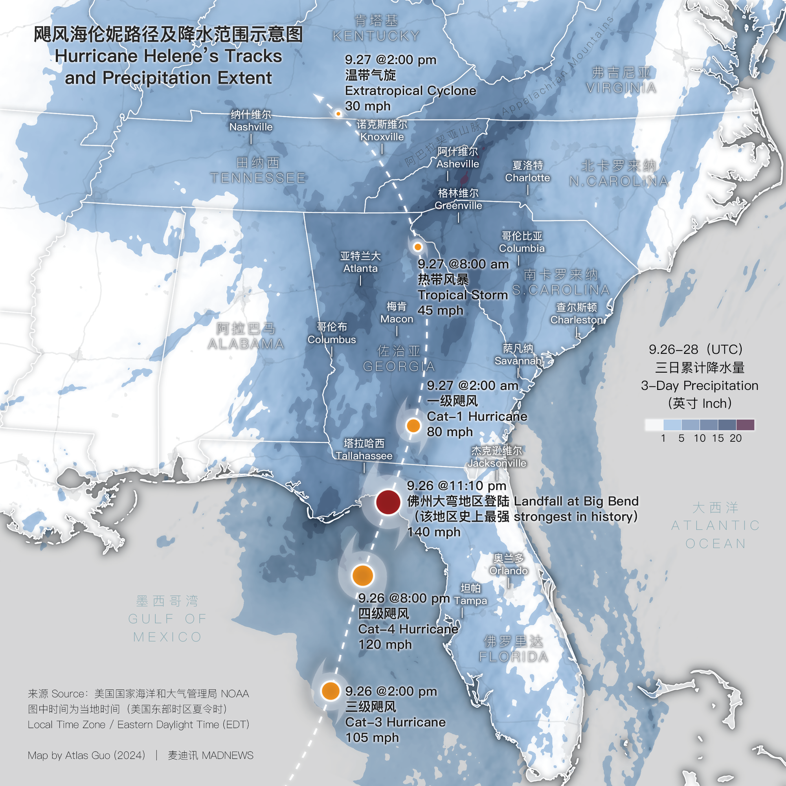
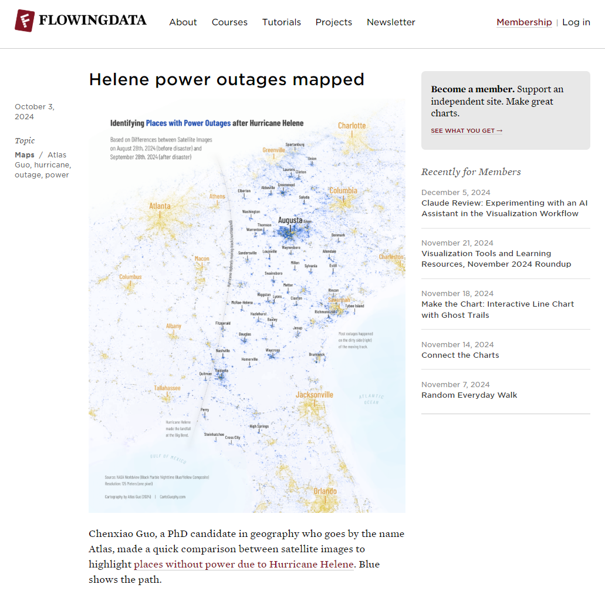
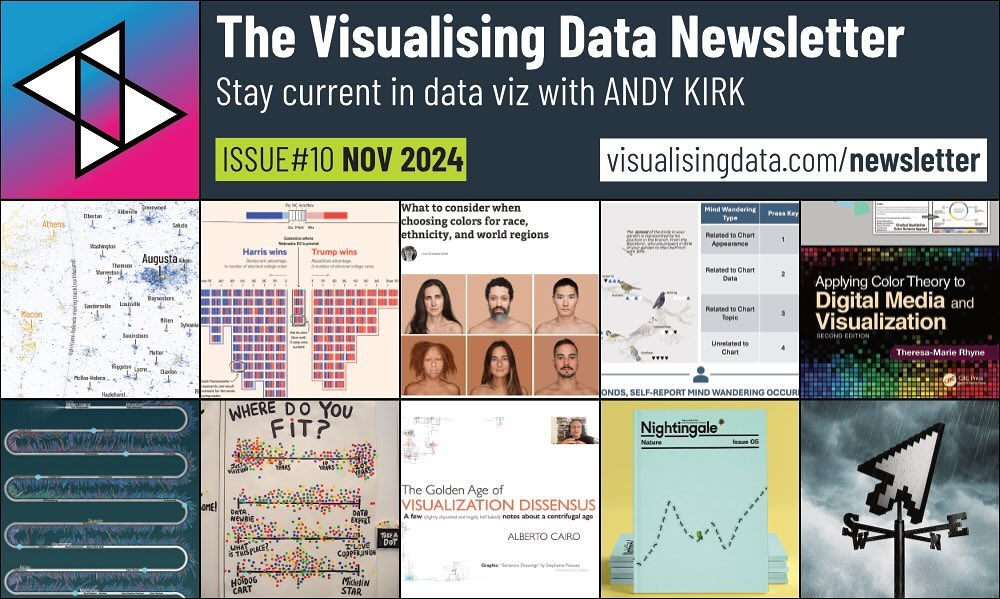
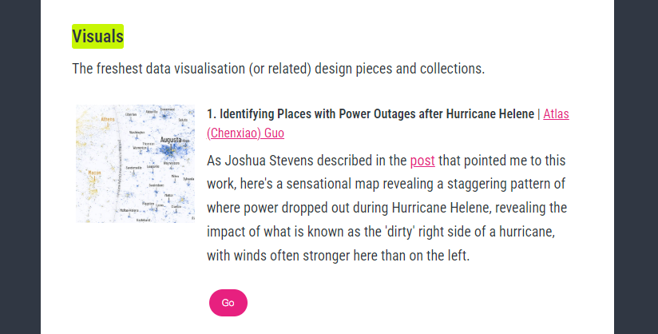

Identifying Places with Power Outages after Hurricane Helene
Based on comparison of satellite images before and after the storm
 Download Compressed
Image
Download Compressed
ImageDownload Full-Size Image
Hurricane Helene is a devastating tragedy. After creating a bilingual map (domestic news map; image attached below the GIF animation) to track its path and show the extent of precipitation, I felt driven to contribute more, so I made another map to help identify and thus support areas impacted by power outages, simply by comparing satellite images taken before and after the disaster.
Furthermore, this map clearly illustrates the much severer condition of the "DIRTY SIDE" of Hurricane Helene. For Atlantic hurricanes which rotate counterclockwise, it's on the right side of the moving direction. Check out this Vox article and video to know more.
Below is a GIF animation of the two satellite images I used from NASA Worldview:

To know more about Hurricane Helene, view the Wikipedia page, and FEMA's current disaster page. I also made a news map for Hurricane Helene (image below). Details in the domestic news page.
 Download Compressed ImageDownload Full-Size Image
This map was cited on October 3, 2024 by FlowingData:
This map was featured by Visualising Data on their November 2024 Newsletter:
 